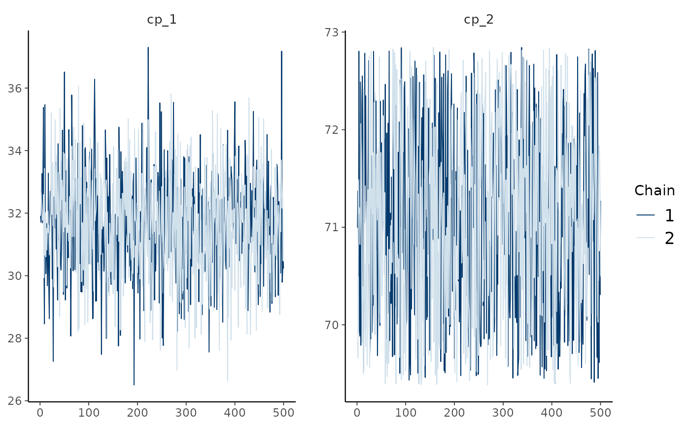

Extract posterior or prior draws using posterior, coda, or the optional tidybayes package's S3 generics.
Base R's as.matrix(), as.array(), and as.data.frame() return plain draws, like in rstanarm and brms,
so bayesplot functions work directly on the fit.
Usage
# S3 method for class 'mcpfit'
as_draws(x, prior = FALSE, ...)
as_draws(x, ...)
as_draws_df(x, ...)
as_draws_array(x, ...)
as_draws_matrix(x, ...)
as_draws_rvars(x, ...)
# S3 method for class 'mcpfit'
as.matrix(x, prior = FALSE, ...)
# S3 method for class 'mcpfit'
as.array(x, prior = FALSE, ...)
# S3 method for class 'mcpfit'
as.data.frame(x, row.names = NULL, optional = FALSE, prior = FALSE, ...)Arguments
- x
An
mcpfitobject.- prior
Logical. Extract prior draws (
TRUE) instead of posterior draws (FALSE)? Errors if the requested draws are unavailable.- ...
Passed to posterior or tidybayes format conversion functions.
- row.names, optional
Unused. For compatibility with
as.data.frame().
Value
A posterior draws object or a coda mcmc.list object.
as.matrix() returns a draws-by-parameter matrix, as.array() an iteration-by-chain-by-parameter
array, and as.data.frame() a draws-by-parameter data frame. The data frame has no chain information,
so use as_draws_df() for chain-aware diagnostics such as posterior::rhat().
Examples
# Default posterior draws, with one row per iteration and chain
draws = as_draws(demo_fit) # Return a posterior::draws object
head(as_draws_df(demo_fit)) # Convert draws to a data frame
#> # A draws_df: 6 iterations, 1 chains, and 7 variables
#> cp_1 cp_2 Intercept_1 time_2 Intercept_3 time_3 sigma_1
#> 1 32 71 8.9 0.58 14 -0.155 3.5
#> 2 32 71 9.9 0.57 16 -0.335 3.5
#> 3 32 70 11.4 0.53 13 -0.096 4.0
#> 4 33 73 10.1 0.56 14 -0.174 4.0
#> 5 32 70 10.0 0.47 14 -0.158 4.7
#> 6 33 70 10.0 0.54 13 -0.140 4.0
#> # ... hidden reserved variables {'.chain', '.iteration', '.draw'}
# Other posterior formats are useful in different downstream packages
as_draws_matrix(demo_fit)[1:3, 1:3] # Matrix of draws by parameter
#> # A draws_matrix: 3 iterations, 1 chains, and 3 variables
#> variable
#> draw cp_1 cp_2 Intercept_1
#> 1 32 71 8.9
#> 2 32 71 9.9
#> 3 32 70 11.4
as_draws_array(demo_fit)[1:2, , 1:2] # Iteration-by-chain-by-parameter array
#> # A draws_array: 2 iterations, 2 chains, and 2 variables
#> , , variable = cp_1
#>
#> chain
#> iteration 1 2
#> 1 32 33
#> 2 32 33
#>
#> , , variable = cp_2
#>
#> chain
#> iteration 1 2
#> 1 71 70
#> 2 71 70
#>
as_draws_rvars(demo_fit)[c("cp_1", "cp_2")] # Random-variable representation
#> # A draws_rvars: 500 iterations, 2 chains, and 2 variables
#> $cp_1: rvar<500,2>[1] mean ± sd:
#> [1] 32 ± 1.7
#>
#> $cp_2: rvar<500,2>[1] mean ± sd:
#> [1] 71 ± 0.99
#>
# Base R formats, e.g., for bayesplot
as.matrix(demo_fit)[1:3, 1:3] # Plain matrix of draws by parameter
#> variable
#> draw cp_1 cp_2 Intercept_1
#> 1 31.90708 70.99582 8.947364
#> 2 31.71172 71.37298 9.867221
#> 3 32.05810 70.49805 11.369319
bayesplot::mcmc_trace(demo_fit, pars = c("cp_1", "cp_2"))

# mcp also supports the coda and tidybayes conventions
head(coda::as.mcmc(demo_fit)[[1]]) # First chain as a coda mcmc object
#> Markov Chain Monte Carlo (MCMC) output:
#> Start = 1
#> End = 7
#> Thinning interval = 1
#> cp_1 cp_2 Intercept_1 time_2 Intercept_3 time_3 sigma_1
#> [1,] 31.90708 70.99582 8.947364 0.5835762 13.87090 -0.15501670 3.482356
#> [2,] 31.71172 71.37298 9.867221 0.5657889 15.82394 -0.33517543 3.473407
#> [3,] 32.05810 70.49805 11.369319 0.5262384 12.61722 -0.09556548 4.020069
#> [4,] 33.26487 72.80376 10.124358 0.5609585 13.68735 -0.17380410 3.982678
#> [5,] 31.68991 69.92944 9.973154 0.4656394 13.77041 -0.15837419 4.650924
#> [6,] 33.29453 69.88452 10.025386 0.5361540 12.50262 -0.13980463 3.983922
#> [7,] 35.38173 72.48857 10.306921 0.5893318 12.49397 -0.16163957 3.647744
if (requireNamespace("tidybayes", quietly = TRUE))
head(tidybayes::tidy_draws(demo_fit))
#> # A tibble: 6 × 10
#> cp_1 cp_2 Intercept_1 time_2 Intercept_3 time_3 sigma_1 .chain .iteration
#> <dbl> <dbl> <dbl> <dbl> <dbl> <dbl> <dbl> <int> <int>
#> 1 31.9 71.0 8.95 0.584 13.9 -0.155 3.48 1 1
#> 2 31.7 71.4 9.87 0.566 15.8 -0.335 3.47 1 2
#> 3 32.1 70.5 11.4 0.526 12.6 -0.0956 4.02 1 3
#> 4 33.3 72.8 10.1 0.561 13.7 -0.174 3.98 1 4
#> 5 31.7 69.9 9.97 0.466 13.8 -0.158 4.65 1 5
#> 6 33.3 69.9 10.0 0.536 12.5 -0.140 3.98 1 6
#> # ℹ 1 more variable: .draw <int>